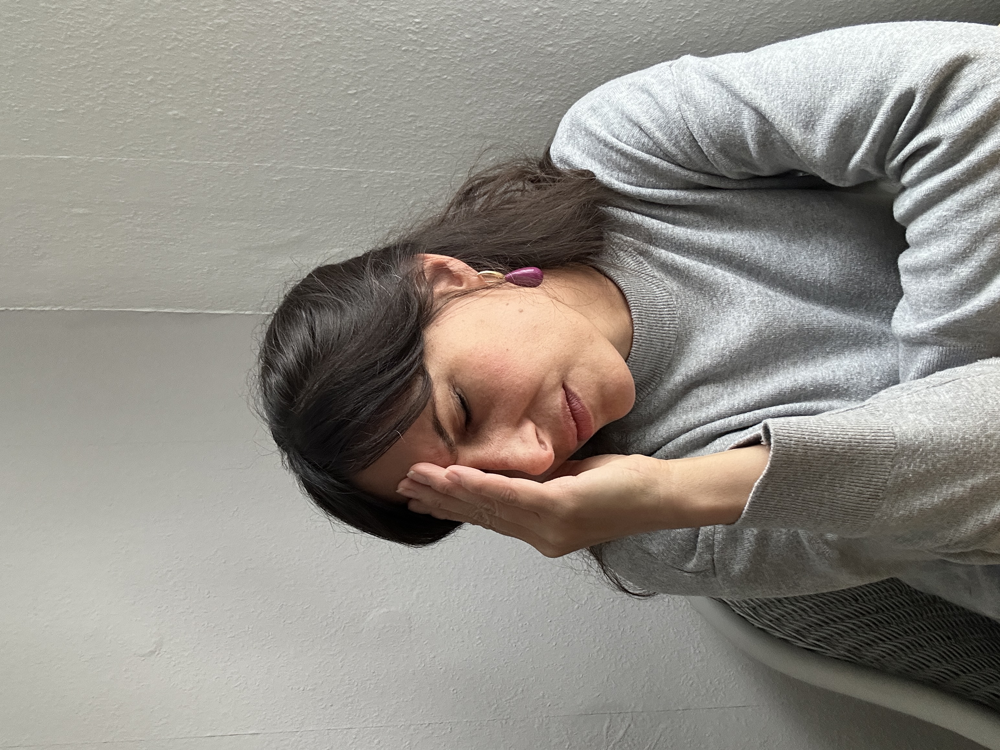

Bewusstseinsarchitektur
Und machst trotzdem das Gleiche. Du wiederholst, was in dir gespeichert ist.
Nicht dein Verhalten ist das Problem.
Die Struktur dahinter.
Die lässt sich verändern.

Du musst nicht mehr verstehen, warum es so ist.
Du musst entscheiden, ob es so bleibt.
Nicht das Meeting.
Du.
Und trotzdem machst du genau so weiter.
Andere wären froh.
Das ist kein Willensproblem.
Und kein Wissensproblem.
Es sitzt tiefer.
Genau da setze ich an.
Verstehen verändert nichts.
Zugriff schon.
Du kannst alles wissen.
Und trotzdem gleich reagieren.
Du merkst es in genau diesen Momenten. Wenn du weißt was du tun willst, und trotzdem etwas anderes tust. Das ist kein Versagen. Das ist der Hinweis, dass die Ursache woanders sitzt.
Coaching, Therapie, Meditation. Sie setzen alle auf bewusster Ebene an. An Gedanken, Verhalten, Einsicht. Das sind Ergebnisse. Nicht Ursachen.
Die eigentlichen Ursachen sind innere Strukturen die im Unterbewusstsein gespeichert sind. Sie entstehen über Jahre. Durch Erfahrungen. Durch das was nie ausgesprochen wurde. Und sie sind schneller als jeder Gedanke.
Ich arbeite genau dort. Ohne Hypnose. Ohne Trance. Ohne Kontrollverlust. Du bleibst vollständig bei dir.
Ich verändere nicht was sichtbar ist.
Ich verändere die Struktur aus der es entsteht.
Du coachst. Du führst. Du trägst.
Du funktionierst.
Diese Fähigkeiten laufen auf Autopilot. Rund um die Uhr. Auch wenn du schläfst. Und sie kosten dich. Täglich.
Körper
- Schlaf, der nicht mehr erholt.
- Eine Müdigkeit, die kein Wochenende löst.
- Kieferspannung. Tinnitus. Herzklopfen nachts.
Beziehungen
- Nein sagen. Und dann doch noch erklären wie es geht.
- Mit den Kindern nicht die sein, die man sein will.
- Konflikte lösen. Und abends alleine damit sein.
Beruf & Sichtbarkeit
- Preise nennen. Und im letzten Moment nach unten gehen.
- Den eigenen Traum kennen. Und ihn trotzdem verschieben.
- Andere begleiten, coachen, therapieren. Und bei sich selbst nicht weiterkommen.

Alles läuft. Aber es kostet.
Das ist kein Willensproblem.
Ich höre das anders.
Vielleicht wurde dir gesagt:
„Zu kontrollierend."
„Zu perfektionistisch."
„Zu viel."
Meine Einschätzung.
Kontrolle ist Organisationskraft. Perfektionismus ist Qualitätswille. Verantwortung ist Stärke. Das sind keine Fehler. Das sind Kräfte die dich weit gebracht haben. Das Problem ist nicht wer du bist. Sondern: Irgendwann dienen sie dir nicht mehr. Sie halten dein System rund um die Uhr unter Strom. Und das kostet. Täglich.
Du erklärst es täglich anderen.
Und kommst bei dir selbst nicht weiter.
Du kennst die Mechanismen. Du weißt mehr über innere Prozesse als die meisten.
Und trotzdem gibt es eine Stelle, wo du keinen Zugriff auf dich selbst bekommst.
Wissen schützt nicht vor Mustern. Es erklärt sie nur besser.
Bewusstseinsarchitektur setzt dort an, wo dein Handwerkszeug aufhört.
Wer sich selbst klar ist, führt anders.
Nicht weil sie mehr weiß.
Sondern weil sie nicht mehr gegen sich arbeitet.
Ich rede nicht über diesen Zustand.
Ich habe ihn im Körper erlebt.
Klassisches Ballett ab fünf. Mit 13 München, Talentschmiede des Bayerischen Staatstheaters. Leisten über jede Grenze. Bis der Körper aufgehört hat mitzumachen.
Mit 15 die Prüfung vor John Neumeier. Er stellte mir eine Frage:
„Du kannst. Aber willst du das hier wirklich?"
Danach zwanzig Jahre Arbeit mit Frauen. Faszien, Atem, Bewegung. Präzise. Wirksam.
Meine Klientinnen gingen leichter raus als sie reinkamen. Und ich hatte am nächsten Morgen die Kopfschmerzen.
Das hat mich zu einer Methode geführt. Nicht am Körper ansetzen. Sondern an dem was den Körper steuert.
„Die Methode ist der Ursprung. Bewusstseinsarchitektur ist mein Weg."
Körperarbeit und direkter Zugang zum Unterbewusstsein. Beides. In einer Arbeit. Mit einer Person, die diesen Zustand nicht aus Büchern kennt.
Was in einer Sitzung passiert.
Ich arbeite nicht daran, dass du dich besser regulierst.
Ich arbeite dort, wo deine Reaktion entsteht.
Damit sich nicht nur etwas erklärt. Sondern verändert.
In der Sitzung
Du bringst ein Thema mit. Ich folge dem, was dein System zeigt. Nicht dem, was du darüber denkst. Dann arbeite ich direkt an der Stelle, wo das Muster sitzt. Du spürst wenn sich etwas verschiebt. Meistens noch in derselben Sitzung.
Online. 60–90 Minuten. Du brauchst nichts vorzubereiten.
Was danach
Jemand fragt nach deinem Preis. Du nennst ihn. Ohne ihn im letzten Moment runterzukorrigieren.
Du sitzt in einem schwierigen Gespräch und sagst, was du meinst. Direkt. Ohne Entschuldigung danach.
Dein Körper bleibt still in einem Moment, in dem er früher angespannt gewesen wäre.
Nicht weil du geübt hast. Weil sich die Struktur darunter verändert hat.
Was das nicht ist
Kein Analysemarathon.
Kein Rumwühlen in alten Geschichten.
Kein Tool, das du täglich anwenden musst.
Keine Hypnose.
Keine Suggestion.
Kein Kontrollverlust.
Und wenn sich etwas verändert hat: Du kannst selbst damit arbeiten. Keine dauerhafte Abhängigkeit.
Tiefer als Mindset-Arbeit.
Schneller als klassische Therapie.
Von zu Hause aus.
Das Ziel dieser Arbeit
Das sind keine Ziele die du dir vornimmst. Das ist was passiert, wenn die Strukturen aufhören gegen dich zu arbeiten.
Du vertraust dir wieder.
Nicht als Vorsatz. Nicht durch Übung. Deine Reaktionen, deine Entscheidungen, deine Impulse. Ohne ständiges Hinterfragen. Einfach so.
Du führst aus dir heraus.
Nicht gegen dich. Nicht trotz dir. Du leitest, coachst, begleitest, entscheidest. Aus einem Ort der klar ist. Das spüren andere. Ohne dass du es erklären musst.
Die Energie gehört dir.
Was bisher ins Regulieren, Abwägen, Kontrollieren geflossen ist, steht jetzt zur Verfügung. Für deine Arbeit. Für deine Beziehungen. Für das was wirklich zählt.
Auch dein Körper kommt zur Ruhe.
Nicht weil du dich mehr zusammenreißt. Sondern weil das System aufhört, gegen dich zu arbeiten. Spannung lässt nach. Schlaf erholt. Der Druck der sofort da war, ist nicht mehr automatisch da.
Die Stille, die danach entsteht, hat keinen Namen.
Du hörst einfach auf, dich selbst in Frage zu stellen. Und fängst an, dir zu gehören.
Wenn innen nichts mehr gegen dich arbeitet,
zeigt sich das überall.
Erfahrungsberichte
„Ich habe jahrelang unter meinem Preis verkauft. Nicht weil ich den Wert nicht kannte. Sondern weil etwas in mir jedes Mal gebremst hat. Nach der Sitzung war dieser Widerstand weg. Ich nenne seitdem meine Preise ohne Zögern."
„Schuldgefühle haben mich jahrelang in Entscheidungen blockiert. Ich wusste dass sie nicht rational waren. Trotzdem waren sie da. Nach der Arbeit mit Julia: weg. Nicht reduziert. Weg."
„In Leistungssituationen bin ich regelmäßig unter meinen Möglichkeiten geblieben. Aufregung, Blackout, Ärger danach. Seit der Sitzung rufe ich ab was ich kann. Einfach so."
„Ich hatte seit Jahren chronische Rückenschmerzen. Ich habe alles versucht. Nach der Sitzung mit Julia waren sie weg. Ich verstehe es nicht vollständig. Aber es ist so."
„Ich begleite selbst Klientinnen. Bei mir war ich betriebsblind. Ich habe gesehen was andere blockiert, aber meine eigenen Muster nicht angefasst. Die Sitzung hat das geändert."
Die beschriebenen Erfahrungen sind individuelle Erlebnisse. Bewusstseinsarchitektur ist kein therapeutisches oder medizinisches Verfahren und ersetzt keine ärztliche oder psychotherapeutische Behandlung.
Das hier ist nicht für jede.
Nicht wenn du noch eine Erklärung brauchst. Oder den richtigen Moment abwartest.
Sondern wenn du bereit bist, eine alte Geschichte nicht mehr zu brauchen.
Was dann möglich wird: du selbst. Ohne den Widerstand gegen dich.
Nicht wer versteht. Wer den nächsten Schritt geht.
Der nächste Schritt.
Manchmal weißt du genau, worum es geht. Manchmal weißt du nur, dass es nicht aufhört.
System Check
Kein Pitch. Keine Agenda. Du bringst mit was dich beschäftigt. Ich sage dir was ich sehe. Und ob diese Arbeit jetzt das Richtige für dich ist.
System Check starten →Focus Shift
Für das eine Thema, das dich am meisten aufhält.
Nicht besprechen. Verändern. Wir setzen direkt an der Wurzel an. Die Hauptsitzung verschiebt. Der Booster festigt.
Für das was immer wieder kommt. Was sich nicht durch Einsicht löst.
Focus Shift anfragen →Deep Shift
Dort ansetzen, wo andere nicht rankommen.
Nicht Thema für Thema. Die Struktur aus der alles entsteht.
Du arbeitest nicht mehr gegen dich. Du führst dich. Das ist der Unterschied.
Starte mit dem System Check. Wenn es nicht passt, sagen wir das. Bevor irgendetwas entschieden wird.
Was dich vielleicht noch beschäftigt.
Für Frauen die spüren dass Verstehen allein nicht mehr reicht. Die reflektiert sind, viel unternommen haben. Und an einer Stelle nicht weiterkommen. Auch für Coaches, Therapeutinnen und Beraterinnen, die bei sich selbst auf dieselbe Grenze stoßen.
Du bringst ein Thema mit. Ich folge dem, was dein System zeigt. Nicht dem, was du darüber denkst. Dann arbeite ich dort, wo das Muster sitzt. Du bleibst vollständig wach, orientiert, in Kontrolle. Viele spüren noch in derselben Sitzung eine Verschiebung. Online, 60–90 Minuten.
Im Deep Shift: 12 Wochen, 6–8 Sitzungen. Was sich verändert, bestimmt dein System. Kein Schema. Manche spüren nach der ersten Sitzung eine deutliche Verschiebung.
Viele spüren schon in der ersten Stunde etwas. Nicht weil wir oberflächlich arbeiten. Sondern weil wir genau dort ansetzen, wo die Ursache liegt.
Weil die anderen Ansätze auf bewusster Ebene angesetzt haben. An Gedanken, Einsicht, Verhalten. Das sind Ergebnisse. Die Strukturen die sie erzeugen, sitzen tiefer. Schneller als jeder Gedanke. Kein bewusster Ansatz kommt da ran. Nicht weil er schlecht ist. Sondern weil das die falsche Ebene ist. Hier arbeiten wir auf der anderen.
Nein. Bewusstseinsarchitektur ist kein therapeutisches Verfahren und ersetzt keine psychotherapeutische oder medizinische Behandlung. Bei akuten Erkrankungen wende dich an eine Ärztin oder Therapeutin.
Nein. Du bleibst die gesamte Zeit vollständig bewusst und in Kontrolle. Kein Trancezustand. Keine Suggestion.
Drei Minuten. Dann weißt du,
worum es geht.
Ein kurzes Audio. Kostenlos. Kein Opt-in-Spam.
Warum Verstehen allein nichts verändert.
Wenn du noch mehr verstehen willst, reicht Lesen.
Wenn du etwas verändern willst, brauchst du Zugriff.
Du hast zwei Möglichkeiten.
Du verstehst weiter, warum du so reagierst.
Und bleibst genau da, wo du bist.
Oder du greifst dort ein,
wo dein Verhalten entsteht.
Ohne Umweg. Ohne Erklärung. Ohne Selbstkontrolle.
Die Frage ist nicht, ob du es verstanden hast.
Sondern ob du bereit bist, es zu verändern.
Wenn beim Lesen irgendwo etwas in dir
ruhig genickt hat,
dann ist das kein Zufall.
30 Minuten. Wir schauen gemeinsam was dich gerade beschäftigt. Und was möglich wird, wenn das nicht mehr so viel kostet.
Nur Klarheit.
Für Frauen, die wissen wie es richtig wäre.
Und es trotzdem nicht ändern können.